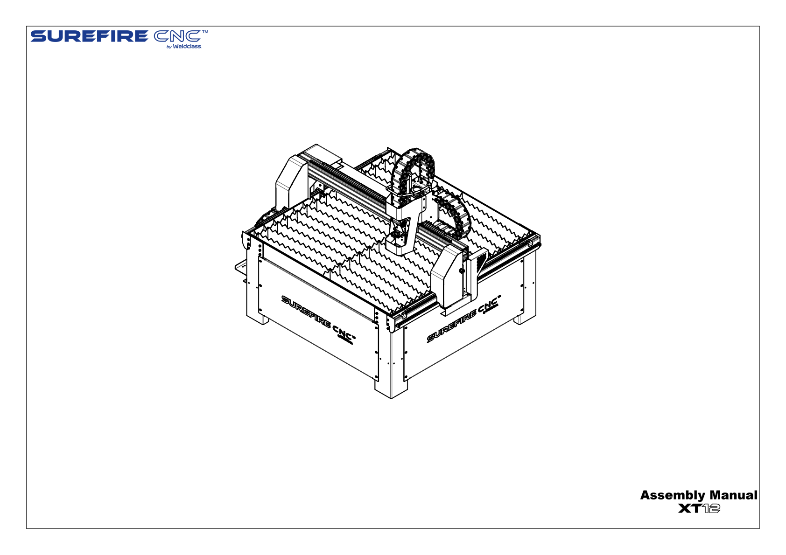
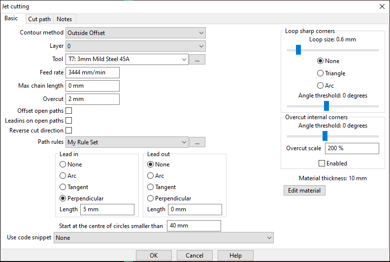
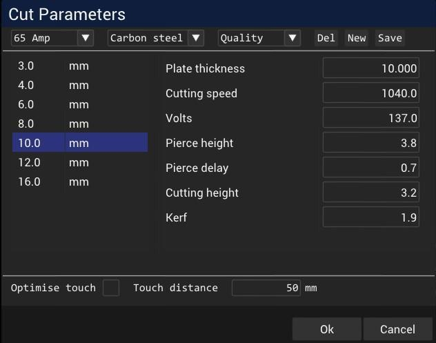
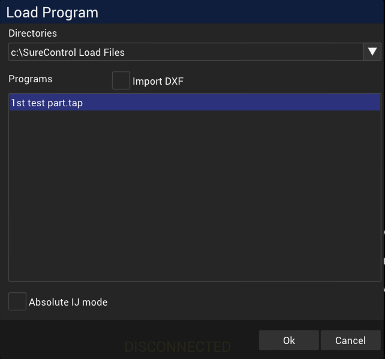
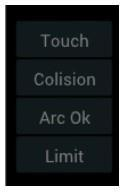
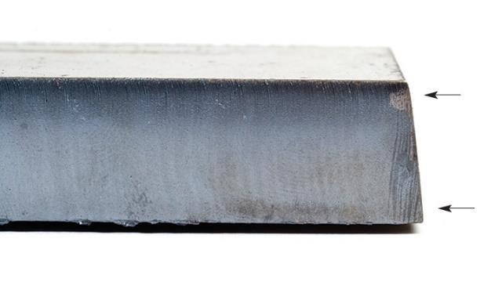

Illustrated reminders
Four visual teaching posters
Pictures explain the file journey, physical setup, controller checks and dry-run-to-cut sequence. Use them with the written steps below.
For trained teachers
Quick cut flow chart
Already know the steps? Use the four-stage chart beside the cutter. Open any box for the detailed instruction, or print the one-page A3 poster.
Your 100 mm square with a centre hole
I already have a DXF on a thumb drive
You do not need to redraw it. Start at Step 2: open the DXF in SheetCam. Steps 2–4 prepare the file on a computer without connecting to the cutter. Steps 5–15 involve the actual machine and are for the trained, authorised teacher after Step 1 is complete.
The file journey: DXF drawing → SheetCam cutting paths → TAP machine file → SureControl. CAM means the software that prepares the torch’s cutting path. This guide follows one SheetCam-to-TAP route throughout; SureControl’s separate direct-DXF import route is not used here.
Example filenames below use square-hole-v1. Substitute your own filename. The square is 100 × 100 mm; use the hole diameter from your own drawing.
Interactive practice
Try a guided software setup
Check the practice drawing and path, load a virtual job, assign its origin and run a screen-only dry run. Familiar controls and step-by-step help let you rehearse a small part of the workflow.
Open the guided practice screenOptional formative practice. It does not connect to the machine or replace the full teacher operating guide.
Teacher reference — documentation-derived, not yet validated on the school installation. These stages adapt the supplied SureControl V2.1 manual and equipment policy. Use them alongside comprehensive supplier training and the school's approved procedure. This guide does not authorise a novice or student to operate the machine.
Before practical use, the trained teacher and supplier must check the actual machine, software, post-processor, recipes, guarding, extraction, isolation and emergency arrangements. Record site-approved variations in the school procedure.
Real movement, referencing, jogging, test firing, Simul and cutting remain teacher-only. Students may enter the shielded area only after the required electrical isolation.
Sources: SureControl manual V2.1; supplied CNC plasma equipment policy. The policy copy was reviewed on 1 February 2022; check current Department and school requirements.
Download the printable operating guide
Fill in these details once with the supplier or authorised trainer
This is the setup record referred to in the numbered steps. Keep it beside the machine. The supplied documents do not identify this school’s switch locations, fitted consumables or tested cut recipe, so those entries must be checked on the installation rather than guessed.
- Design record — filename and revision; square width 100 mm; height 100 mm; intended hole diameter; centre 50 mm from each adjacent edge. Enter your actual hole diameter; the photograph does not specify it.
- Software record — supplier-confirmed SheetCam and SureControl versions; exact post-processor name; exact SheetCam tool name; drawing layer; path-rule name or no rules; lead-in/out type and length; cut order; machine-computer folder for TAP files.
- Cut record — actual material and thickness; power-source and torch models; consumable identifiers; physical current; cutting speed; pierce height and delay; cutting height; voltage if used; kerf width; and which program applies kerf compensation. The supplier/trained operator must also record SureControl THC and Kerf ON/OFF states and which CAM or controller settings govern this TAP file.
- Installation record — labelled locations of emergency stop, keyed switch, electrical isolators, extraction control and work-return connection; air pressure and where/how it is read; water-tray level if fitted; exact power-on and shutdown order, including cooling/purge/extraction time.
- Movement/test record — axes to reference; safe jogging speed and torch clearance; Touch sensor test method; whether a test fire is required and its position/duration/protection; dry-run conditions; screened operator position; electrical-isolation verification and safe retrieval method.
- Authorisation — name and date of the supplier/trainer who checked these installation details, and the school record confirming the trained teacher is authorised to operate. Blank machine fields mean machine operation cannot start.
Write the actual values and control labels in your school record. “Use approved settings” is not a completed entry. The controls below follow the supplied SureControl V2.1 screenshots; stop at any control that does not match and have the supplier identify its equivalent.
Additional software reference: SheetCam TNG setup and operation manual, Scroll screen / Measure (PDF page 110). Used for the measurement instructions in Step 2; match the installed version.
Step 1
Complete the teacher and machine setup record
Identify the real controls and obtain a usable set of job values before any machine operation.
Documentation reference: CNC Plasma.pdf pp1-2; SureControl pp55-62. Match the current school installation before use.
Reference for this stepWhat you need
- The school operator-authorisation record and current equipment procedure.
- The supplier or authorised trainer, the actual machine and the setup-record list above.
Follow these steps
- Check that the school record names you as a trained teacher authorised to use this machine. The supplied school policy requires comprehensive supplier instruction and principal approval; this online course does not provide that approval.
- With the supplier/trainer, point to the emergency stop, keyed switch, electrical isolators, extraction switch and access interlocks. Record each label and location. Have the trainer demonstrate normal stopping, emergency stopping and verification of electrical isolation.
- Complete the software, cut, installation and movement/test entries in the setup record. Obtain a written power-on and shutdown order, exact tool/post-processor names and actual numerical settings for the material you will use.
- Check that the installation approval covers its guards, screened operator position, welding curtains, mechanical extraction and access controls. Report any missing or defective item to the school equipment manager.
- If these records are incomplete, practise Steps 2–4 on a computer disconnected from the cutter. Stop before Step 5; arrange the missing demonstration or settings with the supplier/trainer.

Look closely: Compare the documented equipment identity with school records; do not treat this drawing as an installation approval.
Open larger in a new tab: Perspective drawing of the XT12 cutting table, slatted bed, gantry and torch carriage.What you should see
A completed setup record, a confirmed authorised teacher and identified controls on the actual installation.
How to check
Read each entry aloud with the trainer. A blank pressure, tool name, isolation method or mode setting is an unresolved item, not permission to use an example.
Step 2
Open your USB drawing in SheetCam and check its size
Import the existing 100 × 100 mm square and centre hole; no new drawing is required.
Documentation: SureControl pp14–15 (including File > Import drawing screenshot); SheetCam TNG setup and operation manual, Scroll screen / Measure, PDF p110. The measurement controls must match the installed version.
Reference for this stepWhat you need
- The USB drive containing your .dxf file and a record of its intended hole diameter.
- SheetCam on the preparation computer; retain the original CAD file separately if available.
Follow these steps
- Insert the USB drive into the preparation computer. Open SheetCam. If a previous job is open, save it first, then choose File > New job so it is not mixed with this drawing.
- Choose File > Import drawing. In the file window, open This PC, select your USB drive, select your .dxf file and click Open. Use the drive label shown on your computer; its drive letter can differ.
- In Drawing options, select Metric. For this square-and-hole exercise, click the bottom-left dot in the Drawing position grid, as shown in the supplier screenshot. Click OK. You should see one square and one circle.
- Choose Zoom to fit current part. To measure the imported outline, select Scroll screen, right-click in the drawing and choose Measure. Click the bottom-left corner, then move the pointer to the bottom-right corner: the distance should be 100 mm. Press Escape to finish measuring.
- Repeat Measure from the bottom-left to the top-left corner: 100 mm. For the hole centre, start at the bottom-left corner and move to the circle centre; the X and Y distances at the bottom of the screen should each be 50 mm. Measure snaps near corners and circle centres. Do not use the diagonal distance as the square width.
- Zoom in on the circle and compare its diameter with your drawing record. A centre-to-edge measurement is a radius: double it to obtain the diameter. A cursor measurement is a size check, not a precision inspection; if the edge cannot be identified accurately, have the designer verify the circle dimensions in the CAD file before continuing.
- Trace the square and circle visually. There should be no extra lettering, dimension lines or unrelated shapes intended for cutting. If a shape is missing or the size is wrong, stop here; correct/export the drawing in the original CAD program and repeat this import with a new revision.

What you should see
One 100 × 100 mm square and one centred circle, with the intended hole diameter. The drawing is on the computer; the machine has not moved.
How to check
Record width, height, centre offsets and intended diameter. Screen size alone proves nothing. Step 3 checks the generated cutting paths for breaks or extra cuts.
Step 3
Create the SheetCam cutting operation and preview it
Tell SheetCam which lines to cut and which recorded tool settings to use.
Documentation reference: SureControl pp15-16,41-44,48-50. Match the current school installation before use.
Reference for this stepWhat you need
- The drawing already imported in Step 2.
- The setup record giving the exact SheetCam tool, layer, path rules, lead-in/out and post-processor for this job.
Follow these steps
- Under Operations, click the jet-cutting icon (a torch with a right-pointing arrow). The Jet cutting operation window opens; compare it with the screenshot below.
- For this simple closed square and hole, select Outside Offset as in the supplier example. In Layer, select the layer containing both contours. Choose 0 only if your imported square and circle are actually on layer 0; if they are on different layers, ask the CAM teacher to set up and check both operations.
- In Tool, select the exact tool name written in the setup record for the material, thickness, current and consumables. Check the displayed Feed rate against that record. Do not select a similar-looking tool or create a recipe from the screenshot.
- Set Path rules and the lead-in/out controls to the names, types and lengths recorded for this job. A lead-in is where the torch begins in waste metal before joining the finished edge. The screenshot’s My Rule Set and 10 mm lead-in are supplier examples, not values to copy. Click OK.
- Use the display-toolbar buttons Show input paths, Show tool paths, Show path directions, Show cut start points and Show rapid moves. Hover over an icon to read its name. Zoom in on the circle and square: the hole cut must lie in the circular waste; the outside cut must lie outside the retained square. Check both lead-ins stay in waste.
- Click Run simulation for the on-screen preview. Follow the whole sequence: one complete circle first, then the complete outside square, with no extra repeated cuts or travel beyond the available sheet. Outside Offset is the supplier’s whole-part example; inspect the actual hole result rather than adding another operation blindly.
- If a path is absent, doubled, open, on the wrong side or cuts the outside before the hole, stop before export. Have the CAM teacher correct the drawing or operation and replay the complete preview.

What you should see
A toolpath for the hole and a toolpath around the square, with clear waste-side entry points and a checked hole-first preview.
How to check
Count the intended contours: two for this drawing. Distinguish the original drawing lines from the torch paths using Show input paths and Show tool paths.
Step 4
Save the TAP file and copy it to the machine computer
Create the file SureControl will run, then locate that exact file on the machine computer.
Documentation reference: SureControl pp9,11,17,46. Match the current school installation before use.
Reference for this stepWhat you need
- The checked SheetCam job and supplier-confirmed post-processor.
- The USB drive and exact destination folder written in the setup record.
Follow these steps
- In SheetCam, choose File > Save job as. Save the editable job with a clear name, for example square-hole-v1. Keep this job and the original DXF so you can revise them later.
- Check that the configured post-processor is the exact one recorded by the supplier for this controller. If nobody has confirmed it, stop here and have the supplier configure SheetCam; selecting a different machine name is not a trial-and-error step.
- Choose File > Run post processor (the P toolbar button performs the same action). In the save window choose the USB drive and save the output as square-hole-v1.tap, substituting your actual job name. Review the processing messages and click OK when processing finishes without errors.
- If you prepared the job on another computer, finish saving, safely eject the USB drive and take it to the machine computer. Insert it there. In Windows File Explorer, open This PC > your USB drive, select the .tap file and press Ctrl+C.
- Open the machine-computer destination folder recorded in Step 1 and press Ctrl+V. The manual example is Windows (C:) > SureControl Load Files; use that folder only if the supplier has confirmed it on this computer. If you prepared the job on this same computer, you can save the TAP directly into that confirmed folder.
- Read the destination filename and revision. It must be the .tap file you just created, not the .dxf drawing or the editable SheetCam job. If an older file has the same name, keep a new revision rather than overwriting an uncertain job.

What you should see
The exact checked TAP file is visible in the recorded folder on the machine computer.
How to check
DXF = drawing; SheetCam job = editable preparation; TAP = processed machine instructions. Changing a filename extension does not convert a drawing.
Step 5
Clear and secure the machine work area
Prepare the real machine area before loading material or enabling movement.
Documentation reference: CNC Plasma.pdf pp1-2; SureControl pp55-62. Match the current school installation before use.
Reference for this stepWhat you need
- Step 1 complete; a trained, authorised teacher at the installation.
- The school pre-use inspection record and handling/PPE requirements.
Follow these steps
- Check the floor and operating area are dry. Remove flammable material and clear the sheet-loading route. Inspect the slag collection drawer, guards over drive belts and pinch points, screens and welding curtains; record and report damage before use.
- Check the sheet identification: it must be the material and thickness on the cut record. Do not use unidentified, contaminated or prohibited coated material. Plan the lift with the required assistance or lifting equipment before moving the sheet.
- Keep the machine electrically isolated during access and loading as required by the school procedure. Put on the recorded handling protection; the supplied policy lists enclosed leather shoes, leather gloves, leather apron/overalls and restrained long hair inside the area.
- Move students outside the controlled work area. Check doors/access controls, locks, signs and interlocks using the recorded inspection method. Students cannot operate the real machine, including a dry run.
- Identify the screened operator position. During automatic cutting the teacher must be physically separated from the machine by the securely screened operating area and welding curtains. Do not stand inside the enclosure to watch the cut.
- Locate the mechanical extraction control and its working-status check from the installation record. Check the extraction is serviceable now; start it at the point specified in the recorded power-on sequence before any firing.
What you should see
A dry, cleared area, serviceable guards/extraction and a defined screened operator position with controlled access.
How to check
Physically inspect each listed item. A supplier drawing of the table does not demonstrate that the school’s enclosure or extraction is adequate.
Step 6
Load the sheet and match the physical cutting setup
Use the recorded settings for the actual material, torch and power source.
Documentation reference: SureControl pp13,27-28,53; SureControl V2.1 pp53, 61–62: work return and clamp. Match the current school installation before use.
Reference for this stepWhat you need
- Completed cut and installation records from Step 1.
- Identified sheet, correct consumables and the trained teacher’s pre-use checklist.
Follow these steps
- With access and electrical isolation controlled, load and support the sheet using the planned lift. Check it lies securely and that the planned 100 mm part, hole, lead-ins and travel will fit within usable supported material.
- Before power-on, inspect the work-return lead and clamp. Connect at the exact supplier-confirmed point in the installation record and check contact as demonstrated. Do not assume an arbitrary table rail is an acceptable return connection.
- Check the torch consumable identifiers against the cut record. Check the CPC/controller-to-source connection against the installation record. Leave replacement, wiring faults or configuration changes to authorised support; do not adjust hardware while energised.
- Read the recorded air requirement and check it at the named gauge under the specified flow condition. If a water tray is fitted, compare its level with the recorded fill mark. Missing pressure, reading method or fill level means stop and obtain that detail from the supplier.
- Clear people from the motion area and follow the written power-on order for extraction, air, power source, controller and any torch-enable switch. The exact switches and order must be entered in Step 1; this guide cannot identify them from a software screenshot.
- At the physical plasma power source, use its identified current control to set the amperage on the cut record, at the point specified in that power-on procedure. Read the value back. SureControl’s Amp selection does not set this physical control.
- Compare the sheet thickness, consumables, physical current and SheetCam tool name with the same cut record. They must describe the same job before you connect SureControl.

What you should see
Secure sheet, checked work return/CPC, matching consumables/current and verified air, water if fitted and extraction.
How to check
Read the current on the actual power source, not just the software. Record any mismatch before proceeding.
Step 7
Open SureControl, connect and check its state
Establish communication after the physical setup and access checks are complete.
Documentation reference: SureControl pp6,30-33. Match the current school installation before use.
Reference for this stepWhat you need
- Steps 1 and 5–6 complete, with everyone clear of machine travel.
- The trained teacher at the controls and the identified emergency stop available.
Follow these steps
- Double-click the SureControl desktop icon. Read the CNC state near the bottom of the main screen. On initial opening the manual expects Disconnected.
- Click Connect in the command-button area. Wait for the state to read Offline; Connect changes to Reset after connection. Do not press Reset simply because its label has changed.
- Check that the machine has not moved and no fault message needs attention. In the Options area, click Online to enable the prepared system. The selected option is highlighted.
- Read the new state. On a fresh start the manual expects Not Referenced. Continue to Step 8. If a different unexplained state or fault appears, record its exact wording and stop for the trained operator/supplier.

What you should see
Disconnected → Offline → Not Referenced on the documented fresh-start sequence, without unexpected motion.
How to check
Offline is a software motion inhibit; it is not electrical isolation. Online enables the system, so only the authorised teacher performs this step.
Step 8
Reference the axes and wait for completion
Let SureControl establish the machine’s known starting positions.
Documentation reference: SureControl pp6,30,33. Match the current school installation before use.
Reference for this stepWhat you need
- Connected system and clear motion area.
- The axes and expected reference movement recorded by the supplier in Step 1.
Follow these steps
- Click Reference. In the dialog, compare the selected axes with the setup record. The supplier’s initial routine selects all axes and moves Z, then Y, then X; use this only where the trainer has confirmed it matches the installation.
- Check nobody is inside the motion area. Click Start in the Reference dialog. The machine now moves; watch from the designated operator position.
- Wait for the selected axes to finish their reference sequence. Do not jog, reach into the table or change axis selections during movement.
- When referencing has completed normally, click OK to close the dialog. Check that the required axes are referenced and Not Referenced no longer indicates a missing reference before proceeding.

What you should see
Normal completion of the recorded axis sequence, then a controller that knows the required machine positions.
How to check
Referencing finds machine position. It has not positioned your square on the sheet; Set Origin comes in Step 12.
Step 9
Load the checked TAP file into SureControl
Identify the actual production file before positioning the part.
Documentation reference: SureControl pp18,30,33. Match the current school installation before use.
Reference for this stepWhat you need
- The exact TAP filename and destination folder from Step 4.
- Completed referencing and the drawing/CAM record.
Follow these steps
- On the main screen click Load. The Load Program window opens.
- Use Directories to select the folder from Step 4. Select the exact .tap filename and revision. Leave Import DXF unticked: this guide is loading the TAP already prepared in SheetCam.
- Click OK. Look at the part preview: it should contain one square and one circle, with the same orientation as the SheetCam job.
- Compare the loaded filename with the job record. Read the CNC state: the manual expects Set Origin when a newly loaded part has no assigned origin. Do not press Start yet.

What you should see
The correct square-and-hole program displayed, ready for origin setup.
How to check
Check both filename and geometry. A similar-looking square could be an older file with different dimensions or cutting settings.
Step 10
Check the Touch sensor response
Confirm material contact is detected before the torch begins a cut.
Documentation reference: SureControl pp19,31,34 (sensor indication and keyboard jogging). Match the current school installation before use.
Reference for this stepWhat you need
- The trainer-confirmed sensor test, low jog speed and safe clearance from the movement/test record.
- A trained teacher controlling the real machine; students outside the area.
Follow these steps
- Locate Touch in the sensor Indicators area and Touch in the Options area. The indicator reports actual sensing contact; the option enables the sensing function. They are different controls.
- For an installation confirmed to use the manual’s contact check, position over the sheet using the recorded clearance and low jog speed. Page Down lowers Z; release the key to stop movement. Do not hold Shift, which invokes full-speed jogging.
- Lower gently until sensing contact is made. Release Page Down immediately and watch the Touch indicator: the supplied example expects it to turn green. Never press the torch into the sheet to force a response, and never touch the torch by hand.
- Use Page Up to raise the torch to the clearance entered in the movement/test record, releasing the key when reached. Check the contact indication clears. If the fitted sensing method differs, have the supplier demonstrate and record its test before attempting this stage.

What you should see
Touch indication responds to contact and clears after lifting, without collision or continued downward pressure.
How to check
An enabled Touch option alone does not prove the sensor works. Observe the indicator during the contact-and-lift check.
Step 11
Carry out the recorded torch test, if required
Use a deliberate teacher-only firing check where the installation procedure requires one.
Documentation reference: SureControl pp19,29,53. Match the current school installation before use.
Reference for this stepWhat you need
- A completed test record specifying whether to fire, test position/duration and protection.
- Verified source, air, CPC, extraction, screens and controlled access.
Follow these steps
- Read the test entry in the setup record. If the supplier has recorded that this check is not required here, record that and continue to Step 12. If the entry is blank, stop and ask the supplier; do not test fire to find out.
- If required, place the torch at the recorded test position and clearance. Confirm extraction is running, screens and access controls are in place, flammables are removed and the operator has the recorded arc/eye protection. Everyone remains clear of the firing area.
- Locate the torch-shaped Torch On/Off icon shown in the supplier main-screen reference. It fires the real torch. Click once to begin the recorded test, then click the same icon again to end it at the specified point.
- Verify the arc has extinguished and inspect the power-source display for a fault. Air may continue during the source’s cooling/post-flow cycle; follow its recorded timing. Do not proceed with an active arc or unexplained fault.
What you should see
The specified test completes and firing ends; or the recorded procedure explicitly says no test is needed at this stage.
How to check
This icon is a real firing control, not the screen simulator. The test does not establish that the loaded program or origin is correct.
Step 12
Jog to the part’s starting corner and click Set Origin
Place the bottom-left origin of the imported design at the planned position on the metal.
Documentation reference: SureControl pp19,30,33–34 (Set Origin and keyboard jogging). Match the current school installation before use.
Reference for this stepWhat you need
- The loaded TAP file and a planned origin position with room for the entire path.
- Recorded safe torch clearance, low jog speed and an authorised teacher at the controls.
Follow these steps
- Identify the bottom-left origin used when you imported this exercise. Select a position on the sheet that leaves room for the full 100 × 100 mm square plus outside kerf, lead-ins and travel. The part’s starting corner need not be the physical edge of the sheet.
- At the recorded safe torch clearance and low jog speed, use Left/Right arrows for X and Up/Down arrows for Y to move to that position. Movement continues while a key is held and stops when released. Watch the real direction of travel; do not hold Shift for this setup.
- Release the jog keys. Click Set Origin, not Origin. Set Origin assigns the current location as the part zero; Origin commands a move to an already assigned zero.
- Check the part coordinates reset to the new zero and the orange crosshairs correspond to the intended starting corner. Compare the displayed part and lead-ins with the usable sheet area. Continue to the dry run to check actual travel.
Supplier demonstration: setting the origin
Watch how the supplier relates the job position to the sheet. This shows real machine movement performed by an operator.
Open in YouTubeSupplier video; interface and job origin must match the local procedure. Watching is not permission to jog the machine.
Look for
- The chosen position on the sheet
- Set Origin and the orange crosshair
- The final fit check
Explain the difference between assigning the origin and commanding a return to it.
Read the written learning pathway
The numbered actions and Set Origin screenshot above provide the same learning route: identify the approved part zero, use the trained teacher’s jogging method, assign it with Set Origin, and check the job’s relationship to the sheet. Origin is a separate motion command. Keep students outside the controlled work area.
What you should see
The part zero corresponds to the selected location and the complete path fits within the usable sheet.
How to check
The 100 mm dimension describes the finished square. Extra space is needed for the outside cut and lead-ins; do not place its outline flush to an edge without checking the path.
Step 13
Turn Simul on and run the real machine without cutting
Confirm placement and travel using real movement with firing disabled by Simul.
Documentation reference: SureControl pp19,31; contrast p42. Match the current school installation before use.
Reference for this stepWhat you need
- Correct loaded program, assigned origin and the recorded dry-run clearance/conditions.
- Controlled access and the trained teacher ready to stop movement.
Follow these steps
- Recheck the dry-run entry in the setup record and the clear travel area. Locate Simul in Options. Click it only if needed so it is ON/highlighted. Online must also be enabled for movement.
- Click Start. If a start-position menu appears, choose the entry meaning the beginning of the program for this fresh job; do not choose last stop, arc-loss position or nearest profile point. If the menu wording cannot be identified, cancel and have the trainer identify it.
- Observe the entire real motion sequence from the designated operator position. The torch must not fire. Check the hole is traversed first, the square follows, and all lead-ins and travel remain on the planned clear area without approaching clamps or obstructions.
- Wait until motion finishes and check the state returns to Idle. Leave Simul ON while checking the result. Any change to the program or origin requires another complete dry run before cutting.
Supplier demonstration: SureControl simulation
Observe the difference between a real-machine dry run and a screen-only preview.
Open in YouTubeThis clip concerns real movement. Use it for explanation; actual use needs the approved school dry-run procedure.
Look for
- Simul is selected before Start
- The torch travels without firing
State what still moves during this demonstration and why the work area must stay controlled.
Read the written learning pathway
Use the Simul screenshot and numbered actions above. In this documented mode the machine follows the program without firing the torch. It still has moving axes and requires the trained teacher and all motion controls. An offline SheetCam preview is the separate computer-based check.
What you should see
The real machine follows the complete checked route with no arc, obstruction or unexpected travel.
How to check
SureControl Simul moves the cutter. SheetCam Run simulation is only an on-screen preview. Students do not operate the connected machine for this check.
Step 14
Check each cutting option, turn Simul off and start
Make a deliberate transition from dry run to the first actual cut.
Documentation reference: SureControl pp20,27,30-32; CNC Plasma.pdf p1. Match the current school installation before use.
Reference for this stepWhat you need
- Successful dry run and completed cut record, including which program supplies the TAP job’s settings.
- Working extraction and screened operator position, with nobody inside the machine enclosure.
Follow these steps
- Recheck the loaded filename, origin, actual sheet thickness, consumable identifiers and physical power-source current against the cut record. If the job or origin changed after the dry run, repeat Step 13.
- Open Cut Parameters using the sliders icon shown in the supplier screenshot. Compare Amp, Material type, Quality/Production and Plate thickness with the recorded job. Check Cutting speed, Volts where used, Pierce height, Pierce delay, Cutting height and Kerf. The record must say which values the TAP program supplies and which SureControl applies. Do not overwrite a CAM-controlled value or create a new recipe to remove a mismatch; ask the supplier to resolve it.
- If the displayed selection matches the supplier-confirmed record, click OK. In Options, check Touch is ON/highlighted for plasma and Laser is OFF in this documented version. Read THC and Kerf individually and set each to its recorded ON/OFF state. Kerf must not be applied twice by CAM and controller.
- Confirm Online is ON/highlighted. Then deliberately click Simul to turn it OFF. This change allows the following Start command to make a real cut. Read all six options back: THC, Touch, Laser, Simul, Kerf and Online.
- Confirm mechanical extraction is running and access is secured. Take the screened operator position, physically separated from the machine by the enclosure and welding curtains. Click Start only when these checks pass. If a start-position menu appears, select the beginning of the program for this fresh cut.
- Remain at the screened controls while the hole and outside profile cut. Watch for faults or loss of extraction without entering the enclosure. For abnormal behaviour, use the recorded stop/emergency procedure; do not select a restart or recovery point without the trained operator’s assessment.
What you should see
The checked job cuts from the beginning with the documented material recipe and controlled access.
How to check
The supplier’s demonstration flags and screenshot numbers are not a tested recipe for this installation. The completed cut record must give definite THC/Kerf states and identify where compensation is applied.
Step 15
Finish, isolate, remove the part and measure it
Retrieve the square safely and record whether the result matches the design.
Documentation reference: CNC Plasma.pdf p2; SureControl pp32,51-56,61-63. Match the current school installation before use.
Reference for this stepWhat you need
- The written shutdown/cooling/isolation sequence completed with the supplier in Step 1.
- The specified handling tools/protection and a measuring rule or vernier callipers.
Follow these steps
- Wait for the program to finish. Confirm motion has stopped, the arc is out and SureControl reports Idle. Keep people outside the enclosure; Idle does not mean electrical isolation.
- Follow the recorded shutdown order, including required power-source cooling/post-flow and extraction run-on. Then operate the named isolation controls and verify electrical isolation by the method demonstrated in Step 1. If the written order or verification method is missing, keep access closed and obtain the authorised operator’s assistance.
- Before allowing any student into the shielded area, the trained teacher confirms the required electrical isolation. Stop, Offline, Simul or a dark screen is not that confirmation.
- Use the recorded cooling and retrieval method and specified handling tools/protection. Do not touch the metal to test its temperature. Treat the square, hole waste and remaining sheet as hot and sharp until the handling conditions have been met.
- Measure width and height: compare both with 100 mm. Measure the hole diameter and its centre offsets against the drawing record. Inspect the edge for attached slag, incomplete cuts or distortion.
- Record the TAP revision, material/thickness, tool/recipe identifier, measured dimensions and observed defects. Report faults to the trained operator/supplier before another job. Leave the equipment in the recorded safe state; isolate before inspection, cleaning or maintenance.

Look closely: Describe the sample’s top and bottom relationship before proposing a possible cause.
Open larger in a new tab: Cut metal edge with supplier arrows indicating a top edge set inward relative to the bottom edge.What you should see
Safe isolated equipment, controlled retrieval and measurements linked to the exact file and recipe used.
How to check
A completed cut is not evidence of isolation or safe metal temperature. Verify those separately before access or handling.